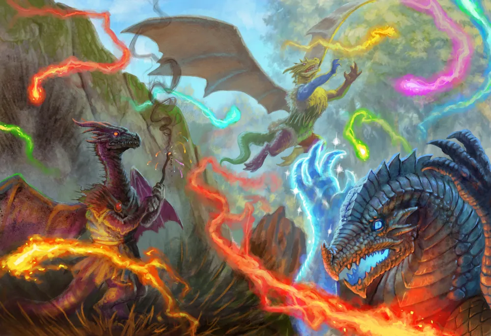
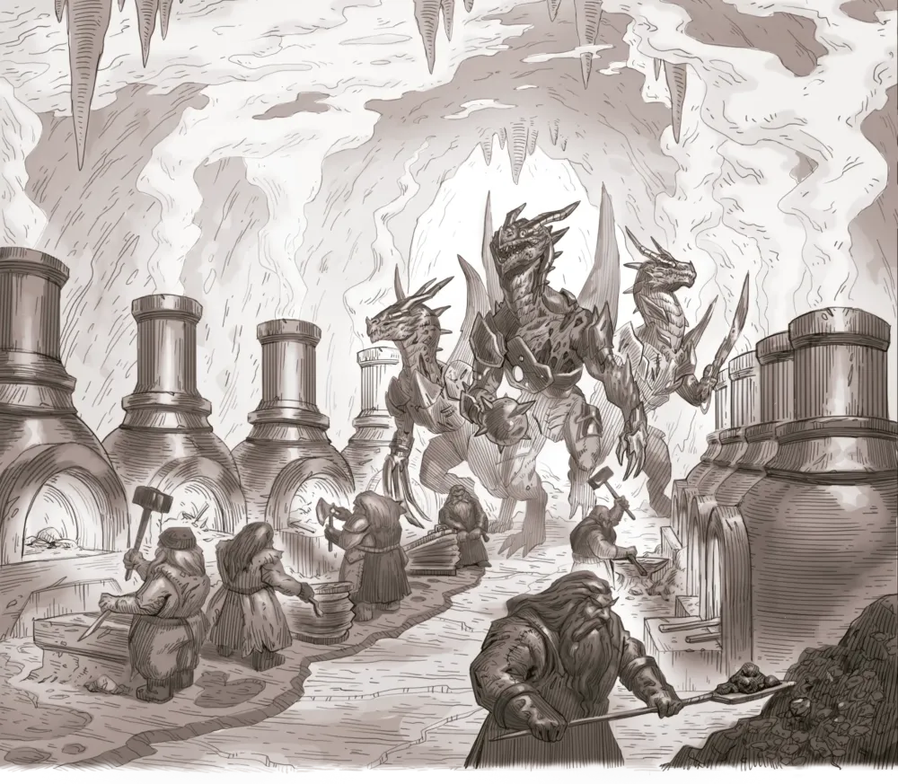
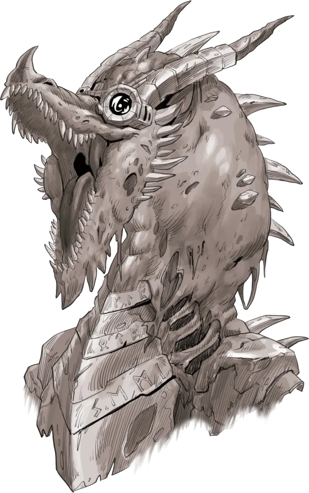
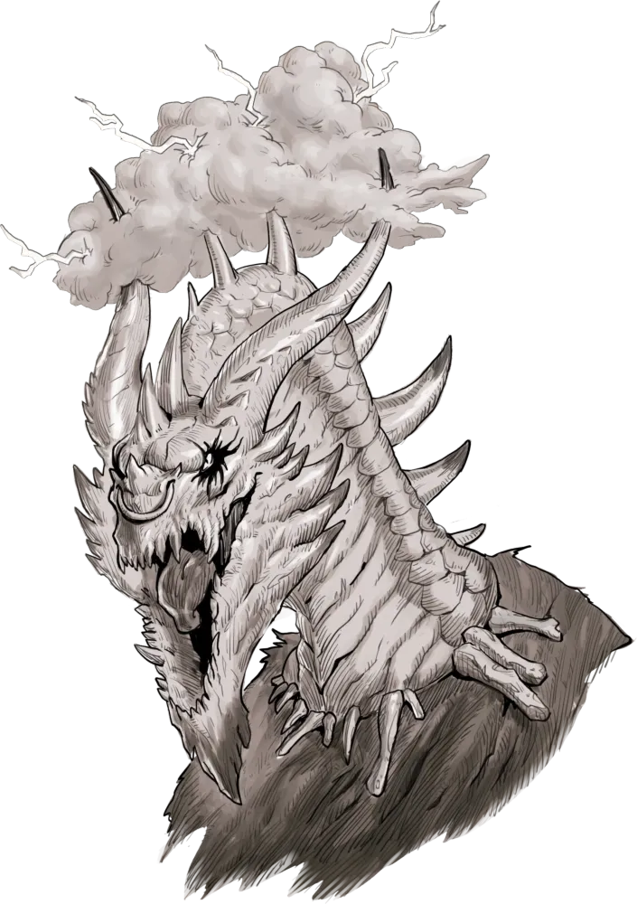
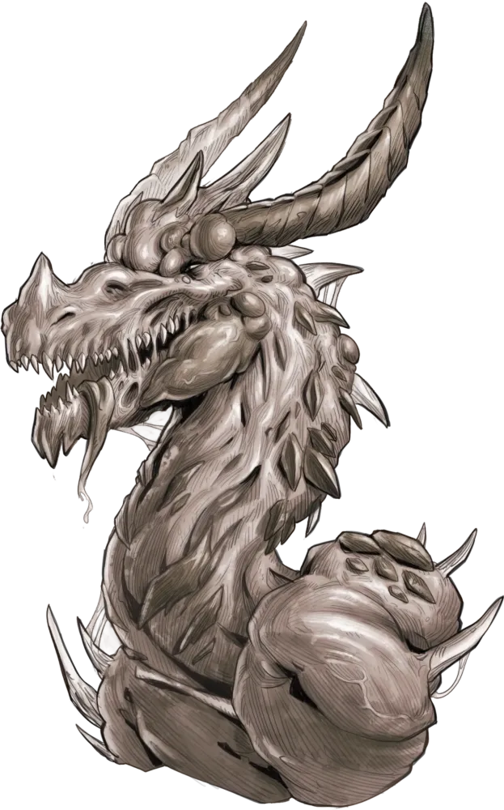
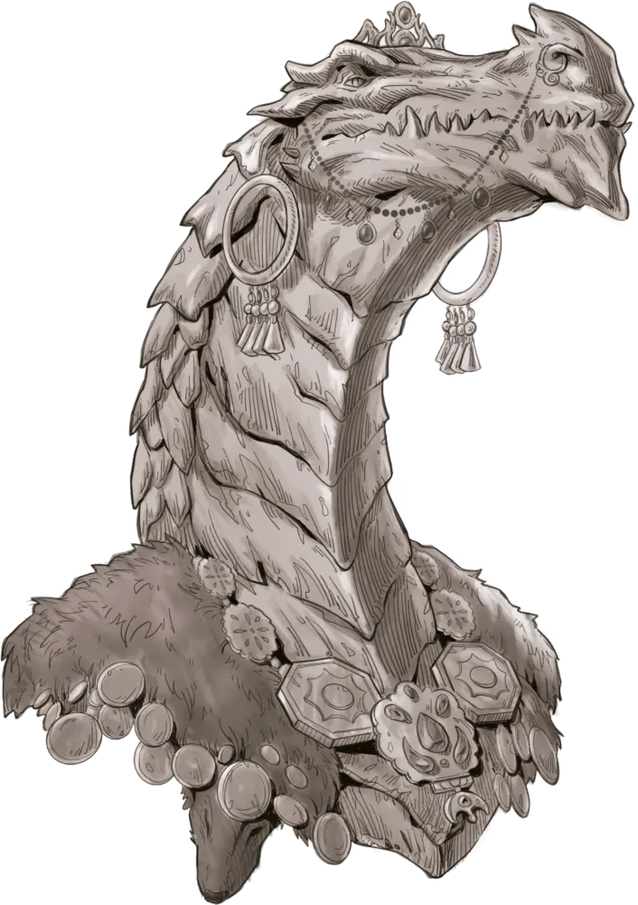
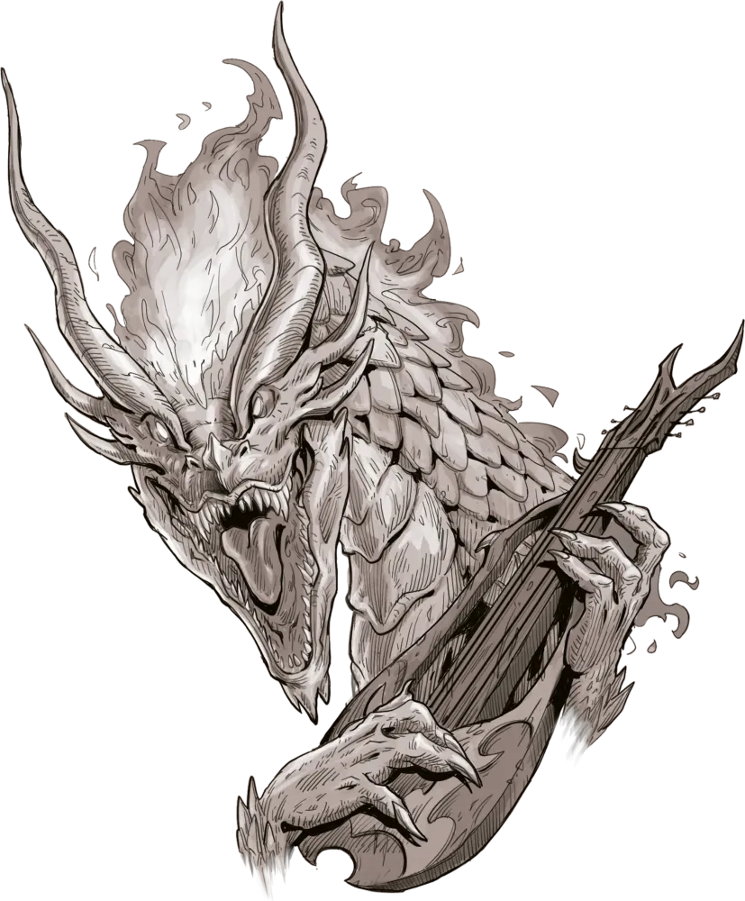

本章章节：行遍诸地的异类龙 ・ 义体龙 ・ 厄运龙 ・ 流变龙 ・ 相位龙 ・ 魔泉龙

当初研究仙灵龙的栖息地时，我只需深入神秘莫测的仙境便可窥见全貌；但异类龙却截然不同，世上并无任何一处地方能让我一次性了解异类龙生活的方方面面。因此，我决定亲自追查各路传闻、典籍中的只言片语以及其他种种线索，寻访那些能引领我揭开异类龙真相的地点与传说。
在将线索筛选至最为可信的部分后，我展开了一系列后续考证与实地勘察――或是寻访可靠的一手见证者，或是亲身前往当地探查，以便直接作出种种睿智的观察。
我将这些考察成果整理汇编，并按异类龙的各个传承分节呈现。在我看来，比起按字母顺序、地理位置或时间先后排列研究成果，这种编排方式更能发挥我观察与分析的价值。亲爱的读者，我先探访了哪处遗迹、或是哪些地点彼此相邻，对你而言想必无关紧要；我确信，你真正感兴趣的是能从每一种异类龙传承中学到的深刻启示。
三角形是几何学与建筑学中最为稳固的形状之一，在神秘学与其他各类学术研究中也同样如此。为此，为了通过三角互证来还原每一种异类龙传承的真相，我竭力为全部五种传承各自揭开了不少于三处独立地点的秘密。
那可是遍布世界各地的整整十五处地点。诚如你所料，出于种种原因我未能亲身踏足每一处，但光是造访我所去过的那些地方，本身就已是一场精彩纷呈的冒险。
富于同情心的读者啊，你大可不必为我担忧。你这位勤勉的叙述者自有诸多锦囊妙计，无需大费周章便能化险为夷、完成考察。那么，谨在此向你呈上我的研究成果！

由于体内浸透了负能量，义体龙往往不得不依赖科技与魔法改造装置来维持生命；因此，在亡灵所青睐的各类场所附近，也常常能够发现义体龙的踪迹。
在研究过程中，我发现了数则关于一片荒芜之地的传说：那里有海量的稳定负能量如同液体般汇聚在地表的一处巨大凹陷中，形成了一座奇特的湖泊。关于这一异象的成因，各方传说众说纷纭。有人声称，这里曾是两支亡灵大军决战的古战场，双方各由一名企图彻底统治此地的强大巫妖或吸血鬼统领；而在决定性的激战中，这两名统帅不知何故双双覆灭，其精华随之汇入了新形成的湖泊。另一些人则描述道，曾有一名精灵法师因痛失众多非精灵同伴而悲恸欲绝，遂试图举行一场仪式，切断这个世界与负能量位面的联系，从而在本质上令整个世界获得不朽。不用说，仪式失败了，猛烈的反噬彻底摧毁了这片土地的地貌。而所有这些故事唯一达成共识的一点是：被当地人称为“幽魂湖”的这片水域，已经存在了数个世纪之久。

我飞越数片海洋，只为亲眼目睹这一异象，而远远望去便能轻而易举地将它认出。一道泾渭分明的圆形界线，将绿意盎然的牧场与繁花盛开的林木，同灰暗死寂的焦土截然隔开。越过那道边界之后，就连枯树桩或杂草也踪迹全无。在大地上蹒跚拖行的，唯有误入此地的不幸野兽，以及妄图寻获虚幻秘宝的莽撞冒险者所化作的骷髅与僵尸。一汪色泽如无星暗夜般的墨黑液池静卧在区域中央，直径不过数百码。这算不上我见过的最大湖泊，但其中蓄积的负能量规模，却远远超出了我过去认为可能达到的极限。我深知自己若是靠得太近，必会步上那条升空迎向我的巨龙的后尘。
她的身躯是一团不断腐烂的血肉与残鳞，仅靠数块刻有符文的石料与皮革勉强拼合维系，但她并非亡灵。尽管外貌骇人，她却无意加害于我，只是升空警告我切勿靠近。我向她保证自己绝无降落之意，并询问了她的名字――格温菲尔达斯。她相信自己能在湖心找到一件引发这股负能量的神器。她本想将其移除，使这片土地恢复正常，然而尽管做足了防护，她的躯体依然遭到了侵蚀腐化。如今，她依靠亲手打造的魔法义体维持生机，并自封为幽魂湖的看守者，驱离一切靠得太近的生灵。我感谢了她分享的故事（以及她的坚守付出），随后便振翅离去。
我发掘出的另一则警示故事，关乎银龙涅瑞萨莉亚之死，以及她的伴侣查利扎雷纳斯的深切悲恸。不幸的是，涅瑞萨莉亚患上了猩红鳞腐病――一种只感染龙类且至今无药可医的罕见疾病。病情恶化得极快，尽管有着被传染的风险，查利扎雷纳斯依然寸步不离地守在她身边，直至她走到生命尽头。他度过了无数个不眠之夜，埋首翻阅古老典籍，并延请每一位胆敢踏上艰险旅途、前往他们空中巢穴的炼金术士或贤者，苦苦寻觅救治良方――哪怕无法彻底根治，至少也要减轻涅瑞萨莉亚无休无止的痛苦。可悲的是，他终究未能如愿。
涅瑞萨莉亚离世后，查利扎雷纳斯陷入了彻骨的绝望；据说笼罩他们浮空城堡家园的云层自此永远化作了阴沉的暴风云，云间雷光闪烁不息，整座城堡终日笼罩在连绵不断的降雨之中。昔日里，人们偶尔还能看到那两头银龙在巢穴上方与四周盘旋翱翔，但自风暴降临之后，查利扎雷纳斯便似乎彻底隐匿了踪迹。后来人们才得知，除了哀悼亡妻，他仍未停下研究的脚步――只不过研究方向不再是治愈魔法，而是复活仪式。据我推测，查利扎雷纳斯相信只要将死灵魔法与永恒之光仪式结合起来，就能令涅瑞萨莉亚死而复生，并彻底净化她体内的病症。对于未曾身陷这般心碎煎熬的旁人而言，此举无疑是注定招致灾祸的鲁莽行径，但我想在查利扎雷纳斯眼中，这已是唯一的选择。
那场仪式引发了惊天动地的反噬。据当时浮空城堡途经之地的地面目击报告记载，平地里骤然刮起狂风，凄厉绝望的惨嚎响彻夜空，就连明月也在短暂间黯淡无光。涅瑞萨莉亚并未从死亡中苏醒，而查利扎雷纳斯自己则险些被死灵能量彻底吞噬。人们或许以为经此重创后他会干脆任由自己死去，但查利扎雷纳斯却不肯接受失败。为了完成向义体龙的蜕变，他运用自己在炼金术与医学上的造诣，打造出一套套玻璃改造器官。如今，化学药剂源源不断地泵入他的躯体以维持生机，而查利扎雷纳斯依旧留在那座城堡之中，执着地继续尝试让挚爱重返人间。
你想必也听说过这样的传闻：在群山极深处的地底，坐落着一座庞大的深地矮人地下综合设施；据称那里的所有矮人都在日以继夜地铸造海量武器与同类军备，只为迎接未来某场惊世大战。要找到可靠情报以证实这座所谓的“幽暗锻炉”确实存在，着实费了我一番功夫――因为深地矮人向来习惯杀灭一切误闯此地的外人。所幸矮人一族出人意料地善于保存档案，尤其是涉及维护与扩建他们珍贵矿业工程的记录。根据这些矮人的记载，地底有一大片区域被标为“严禁入内”，而这恰好为我提供了真正展开调查的起点。
备妥我最精良的洞穴探险与潜入装备及法术之后，我深入了距离禁区最近的洞窟群。数小时后，我开始感受到周围岩壁传来持续而稳定的震动，间或夹杂着钢铁交击的清脆鸣响。我维持着隐形状态继续前行，同时在脑海中备好了一道迅捷的传送法术，以防局势骤然恶化。不久，我便俯瞰到一间由天然岩洞改造而成的恢宏工业大厅。下方数十座锻炉喷吐的浓烟悬聚在洞顶，每一座锻炉旁都有深地矮人铁匠在有条不紊地挥锤锻打；另一些矮人则操纵风箱将矿石熔炼成赤红铁水，或是将完工的成品搬往某处隐蔽不见的军械库。
眼前这一幕固然令人叹为观止，却并非我专程寻访此地的初衷。观察这片繁忙工坊数分钟后，我的猜想得到了证实：一小队义体龙从我对面的甬道中迈步而出，似乎是在巡查闯入者，又像是在监督劳作。它们每一头都用金属甲板覆住了化脓溃烂的创口，其中大多数更是将利爪替换成了刀刃与其他战争兵器。继续逗留实在太过凶险，于是我带着比来时更多的疑问悄然撤离。究竟是这些义体龙在幕后执掌整座工坊，还是深地矮人擒获了擅闯领地的巨龙，强行为其装上改造部件并加以转化？而最令人不寒而栗的是――他们究竟在为怎样一场战争做准备？
厄运龙时刻承受着预言魔法的冲刷与折磨，因此现在与未来发生碰撞交汇的场所，往往会成为吸引它们同类的灯塔。
如今已鲜有人知晓“诡秘者”塞法尼克斯那段动荡不安的统治岁月――很久以前，这位人类法师之王曾宣称对一个弹丸小国拥有至高统治权。她综合运用贿赂、恐吓与摧折心智的魔法，从周边数个国度硬生生割据出这片王国，并筑起了一座被她命名为“幻光城”的都城。迁居至此的民众曾度过一段安乐时光，因为塞法尼克斯为他们提供了安全保障与开启新生活的机会。然而，一场突如其来的旱灾令幻光城陷入了短暂的饥荒，城中犯罪随之失控蔓延。满腹怨愤的市民开始议论纷纷，指责塞法尼克斯无力迅速平息危机，甚至密谋将她推翻。在恐惧与震怒驱使下，她向整座城市降下了一道庞大咒语，用繁复无比的幻术笼罩全城、蒙蔽臣民的心智。一夜之间，所有人都深信幻光城是一座人间乐土。

为了维持这层虚假表象，塞法尼克斯严令禁止任何人进出城市，而城中百姓的实际处境却在持续恶化。一名来自邻国的好奇游荡者潜入城内，亲眼目睹了令人毛骨悚然的景象：人们身穿破烂布条、啃食腐烂鼠尸，却满心以为自己正身着绫罗绸缎、享用山珍海味。这名潜入者逃出城后立即向本国女王禀报；女王深知自己必须出面干预，否则总有一天，人们只能在幻光城里清理满城尸骸。于是，这位女王召集了一群先知举行秘会，合力汇聚预言神通以击碎笼罩全城的幻象。赶在塞法尼克斯来得及反扑之前，先知们便包围城市施展了破幻魔法；短短数小时内，塞法尼克斯便被昔日温顺服帖的臣民生擒活捉，并在幻光城的市政广场上被处以极刑。咽下最后一口气前，塞法尼克斯向整座城市降下恶毒诅咒，注定每一个在城墙之内入眠的人都会被可怖的未来幻象所纠缠。最终，这座城市（连同整个国家）都被彻底遗弃，化作了如今被称为“幻碎城”的断壁残垣。
每隔一段时间，便会有巨龙自恃能够抵御乃至破除这道诅咒，企图将幻碎城据为自己的巢穴。但它们无一例外全都错了。绝大多数巨龙不出数日便会仓皇逃离废墟，唯有极少数个体硬撑了足够长的时间，在此繁衍后代。而不幸在幻碎城内孵化的龙蛋，无论亲代血统为何，破壳而出的永远都是厄运龙。
不久前我收到了一个包裹，里面装着一本用龙语写就的破旧笔记本，详尽记录了一头名叫伊奥沃尼鲁斯的永光白龙深入极北冰原搜寻绝世秘宝的旅途。他们最终找到的东西或许比秘宝更具价值，但危险程度却也呈指数级倍增。伊奥沃尼鲁斯率领着一支由巨龙与非龙族混编而成的小型探险队，全副武装地迎着极寒气候，在冻原与浮冰之间一连跋涉数日；他们几乎不知道自己正走向何方，也不确定是否会迷失得太深而再也无法返程。但从伊奥沃尼鲁斯在字里行间流露出的那种非去不可的狂热执念来看，他无疑是一位极具个人魅力、能让追随者赴汤蹈火的领袖。
就在探险队士气跌至谷底之际，他们偶然发现了一座洞窟，恰好能在即将袭来的暴风雪中充当避难所。众人在此歇息时，半身人游侠卡温突然陷入了极度的妄想与偏执，一口咬定洞窟深处有什么东西正在暗中窥视他们。伊奥沃尼鲁斯与另外两头永光龙当即拔出武器、点燃火把，小心翼翼地向洞窟深处探查。数小时后，他们发现了一道由内向外散发着幽蓝微光的巍峨冰墙。冰层深处封冻着某个庞大而不可名状之物的阴影，每一头凝视它的巨龙都能感觉到一股无形力量正在拉扯自己的心智，仿佛有某个人――或者说某个东西――正试图通过心灵感应向他们低语。唯恐让对方得逞，三头巨龙仓皇逃离了冰墙……但最终只有两头回到了营地，因为其中一头在半途失足坠入了一道深不见底的冰隙。至少，伊奥沃尼鲁斯在笔记本里是这样写的。
最后几页的字迹变得颇为杂乱颠倒：伊奥沃尼鲁斯挣扎着试图描述目睹冰中黑影对他们梦境造成的影响，以及探险队其余成员是如何因猜忌多疑而开始自相残杀的。激烈的对骂与致命的械斗接连爆发，但整支队伍竟无一人想到要离开那座洞窟。与此同时，从伊奥沃尼鲁斯笔下那些支离破碎的可怖幻象描述中，我拼凑出了真相――我相信，当时的他正在一步步转化为一头厄运龙。
我翻遍典籍也找不到关于这支探险队及其最终下落的任何记载。而我更禁不住暗自思忖：究竟是谁把伊奥沃尼鲁斯的笔记本寄给了我，目的又是什么？
泉石疗养院坐落在一处远离绝大多数聚居地的幽静山谷中，由鲜为人知的“愈角修会”出资兴建――那是一个由深谙巨龙脑部运作机理的永光龙组成的慈善团体。疗养院内收治着寥寥数头在举行永恒之光仪式时心智遭受不同程度创伤的巨龙。修会的部分成员常年游历四方，寻访这类不幸的受害者，力求在他们伤害自己或他人之前将其平安带回院中；其余成员则留守疗养院悉心照料病患。在开展研究期间，我曾与愈角修会打过几次交道；而就在不久前，疗养院新收治了一名颇为奇特的病患，修会便特地邀请我前往探访。
只要知晓路径，前往泉石院的旅途其实相当轻松。我在一个阳光明媚的午后抵达此地，受到了疗养院院长的热情迎接。院长领着我步入室内，沿途经过那些病情较为平缓的病患――他们有的正在惬意地晒着太阳，有的则在进行稳固心神的冥想。乍看之下，泉石院很容易被人误认作一处豪华度假山庄，而非疗愈伤痛的医馆。然而一旦踏入戒备更为森严的隔离病区，这种印象便瞬间消散无踪：厚重门扉之后，不时传出痛苦的呻吟与狂怒的嘶吼。对于我受邀访谈的那头巨龙，院长言辞颇为隐晦，只提到他们“此前从未遇见过这种特殊的妄想症状”。
当我被引见给奎维利奥斯时，尽管他眼中流露出明显的痛楚，神情举止却显得颇为平静。他向我解释说，自己的真名其实叫阿宾德林，原本是一头在未来举行永恒之光仪式的金龙，却在仪式途中遭人打断。他坚信自己的心智被逆着时间洪流抛回到了过去，并“烙印”在了另一头当时也正在举行仪式的巨龙――也就是眼前的奎维利奥斯――脑海之中。奎维利奥斯言之凿凿的笃定神态给我留下了极深印象；等回到家中后，我特意检索了“阿宾德林”这个名字，结果竟震惊地发现，历史上曾先后有另外三头厄运龙提出过与奎维利奥斯如出一辙的说法！倘若此事当真，在未来的岁月里，我们究竟是否有责任去寻找阿宾德林以阻止这场事故――还是说，我们的插手干预恰恰才是引发这一切的根源？
流变龙时刻承受着变化魔法的冲刷，躯体不断以意想不到的方式发生异变。同样极不稳定的环境也会影响龙族，尤其是那些本就容易受其感召的个体。
维克西米莉亚曾是一位才华横溢的龙族炼金术士，却在实验中越过了安全的界限。在她活跃的年代，其他巨龙都清楚：若是想要一剂延年益寿或是进一步强化自身本就非凡能力的灵药，只需前往维克西米莉亚的地牢巢穴向她求购即可。在相当长的一段时间里，她都很乐意向同族出售自己的技艺；但随着年岁渐长，她的性情愈发乖戾无常，索要的报酬也越来越高昂。有时，哪怕只是调配最简单的酊剂，她也会要求客户提供极其罕见的试剂与金属。当时的文献记载表明，维克西米莉亚正在拿某些极度危险的配方做实验，很可能是为了让自己获得永生。
据我考证，这些实验要么将她本人转化成了一头流变龙，要么创造出了一头必须持续摄入诱变药剂才能维持寿命的流变龙。这头巨龙将维克西米莉亚原本的地牢巢穴改造成了一座盘根错节的迷宫，到处塞满了长达数百尺的管线与奔流的化学浆液。整间整间的石室都弥漫着无休止炼金反应所产生的呛人毒烟。炼金构装体与人工生命体日夜操纵着蒸馏器与燃烧炉，一切都只为给地牢的主宰调配出最完美的诱变剂。

无论那头流变龙究竟是维克西米莉亚本人，还是某种扭曲异变的造物，曾踏入其地牢的幸存者都将它描述为一头几乎看不出龙形的怪物：由血肉与鳞片交织而成的肉瘤在它体表不断膨胀又收缩；骨骼爆裂、筋腱撕扯之间，四肢忽而拉长、忽而缩短；它的双翼早已萎缩，脖颈扭曲成诡异的角度；它几乎无法正常吐字，大多时候只能从喉咙深处发出低沉的呻吟，听上去既像剧痛难忍，又似沉溺欢愉。任何妄图讨伐这头怪物或从它口中挖出其诞生始末的人，都面临着自身也被异化的风险――因为整座地牢早已浸透炼金物质，化作了一座巨大的熔炉，足以令一切愚蠢踏入其中的生灵发生畸变。
黑龙、绿龙以及类似的巨龙与自然环境的联系往往比其他龙类更为紧密，一场环境灾难便足以重创这类巨龙的肉体与心智。曾几何时，一种怪异的真菌疫病在某片古老森林中肆虐蔓延，从内部蚕食了高耸的松林。树木虽仍矗立不倒，树皮却因内部滋生的真菌而绷裂扭曲，森林底层的灌木丛也已被成片铺开的硕大蘑菇所取代。鲜有动物能在这样的环境中繁衍生息，当地残存的大多数野生动物都在终日弥漫不散的孢子雾霭中发生了异变。
不幸的是，当这场灾疫席卷森林之时，一对绿龙因感染真菌而病入膏肓，只留下一窝尚未孵化的龙蛋。在残酷的命运捉弄下，父母遗体因霉菌侵蚀而急速腐败所散发出的热量，竟阴差阳错地让这窝龙蛋最终孵化――但破壳而出的幼崽已尽数化为流变龙。由于血肉与真菌组织交融并时刻发生变异，它们发现自己很难在霉木林之外存活。一旦来到广阔外界沐浴数日阳光，它们的躯体便会开始干瘪枯萎，因此无法远行；而只要赶回诞生地稍作停留，便能迅速恢复元气。数代繁衍之后，如今的霉木林已成了一小群流变龙生机勃勃的家园。
我曾亲自前往那片真菌森林拜访当地居民；尽管外表古怪，它们交谈起来却颇为和善可亲。如今的流变龙将自己视作霉木林的守护者，只要没人企图“治愈”这场持续至今的真菌侵染，它们便安于独善其身、与世无争。它们与真菌达成了某种和谐共生，而且据我观察，它们已演化出一种雏形阶段的蜂巢思维，无需言语便可彼此沟通。据它们所言，新生流变龙虽颇为罕见，但一出生便能立即接入这一蜂巢思维，使父母得以轻而易举地照料幼崽的需求。我不得不承认，我着实有几分羡慕它们简朴纯粹的生活方式――只不过，我想自己大概永远也习惯不了那里的气味。
我曾听闻传言，在一片所幸人迹罕至的沼泽深处，存在着位面裂隙的痕迹。此类异象往坏了说是极度凶险的祸源，往好了说也是引人入胜的奇观，无论哪一种都与我的研究息息相关；于是我进一步搜集有关该地区的传说，得知有人将其称为“流变泽地”。传说那里的地貌会在旅人脚下凭空变幻，毫无征兆地改变色彩或质地；人们还说栖息于此的寥寥几种动物全都发生了永久异变，比如会飞的蛇、汲取魔力的蚊虫，以及隐形的青蛙。这些离奇的细节令我联想到了混沌漩涡的无序狂潮，但要确证这一点，我仍需亲自前往流变泽地，亲眼观察其中的种种怪象。
刚一抵达，我便立刻察觉到空气中弥漫着一股异样的能量。原生野生动物偶发的鸣叫声下，始终垫着一层低沉的嗡鸣，几乎如同电流跃动的噼啪声。凭借我自身的魔法与敏锐的观察力，我发现四处都散布着无数微弱的闪烁微光――有时从某个角度看去空无一物，换个角度却又清晰可辨。整片沼泽密布着这种细小的空间异常，其中最大的一处也不过一条面包大小。就在我凝神观察之际，其中一道微型裂隙骤然绽放出斑斓彩光，一条虚空蠕虫从中蜿蜒钻出，证实了我对此地连通混沌漩涡的猜测。那只微小的流变怪在半空中游动了没几尺，便被一条潜伏在水面之下的双口鳄鱼一口吞入腹中。
倘若混沌漩涡能量的持续辐射都能将普通的爬行动物改造成这般模样，不妨试想一枚留在此处孵化的龙蛋将会受到何等影响。无论亲代血统为何，由此诞生的幼龙恐怕都会成为无法长久维持固定形态的流变龙。不过，根据我的研究观察，天生的流变龙自幼便学会了适应这种困境，因此持续变形对它们造成的不便反而较小。倘若一头诞生于流变泽地的流变龙能在沼泽的重重凶险中存活下来，或许也会拥有类似的优势吧。
由于躯体总是在存在与虚无之间闪烁出没，相位龙在旁人眼中或许与现实略微脱节。传送法术与位面旅行魔法引发的意外，便可能催生出这样一头巨龙。
在博览有关我们这个宏伟世界种种奇闻异事的典籍时，我对那类被称为“谜渊主”的诡秘实体略有所闻。这些强大得深不可测的存在潜伏在我们的现实之外，至于它们对我们的所作所为是否抱有兴趣，更是无从揣度。许多人相信它们对我们心怀恶意，一旦有机会便会毁灭我们的宇宙；另一些人则认为它们甚至根本未曾察觉我们的存在。尽管如此，许多谜渊主有时仍会受到崇尚无序者、狂妄自大者与愚昧无知者的膜拜――这些人指望着只要取悦了这般存在，便能获赐权柄与财富，或是在终将降临的湮灭浩劫中幸免于难。在调查这些邪教徒的过程中，我偶然发现了“无名者教会”。这一古怪教派的信徒所尊奉的，或许正是某位谜渊主，又或许是某种更加怪诞离奇的存在。

关于无名者教会所奉宗主，最诡异之处莫过于它没有名字。它的信徒无一人能说出其名讳，而且从我所能找到的资料来看，他们的仪式似乎都在煞费苦心地避免直接提及自己的神明。世间同样没有任何关于“无名者”的外貌描述，那些声称曾亲眼见过它的人，留下的记述也都含糊晦涩得令人抓狂――他们只会用“它不是什么”来勾勒这一存在，并只记述“它未曾说过什么、未曾做过什么”。
不过，真正与我们眼下课题息息相关的，是据称统领着这一教派的那头相位龙。它有着一个令人费解的名号――“在亦不在”，是一个极其难以捉摸的角色。我推测它是在一个多世纪前渗透或是创立了这座教会，并迅速大权在握。在此之前它或许并非异类龙，而是因受到无名者的影响才获得了如今的能力。据我搜集到的零星线索，“在亦不在”栖居在一座并不存在的神庙上方，唯有“具慧眼者”方能寻得其踪。坦白说，我已开始怀疑这整个邪教会不会只是某种骗局或恶作剧，但为了研究的完整性，我还是决定将这一条目收录于此。
龙族传说中记载着艾勒瑞尔丝的故事――她是个厌世孤僻的守财奴，甚至连其他巨龙的陪伴也避之唯恐不及，独自在高山之巅的石砌堡垒中囤积着富可敌国的惊人财宝。无数所谓的英雄曾强攻她的巢穴企图劫掠财富，亦有诸多同族巨龙暗中密谋篡夺她的家园。艾勒瑞尔丝每次都将来犯者尽数击退，但终究对这无休无止的袭扰感到厌倦。在翻遍了自己数不胜数的魔法典籍后，她终于找到了一种方法，能够开辟出一处外人绝对无法进入的私人半位面，用以容纳她的堡垒与宝库。唯有她本人才能自由出入其中，她也终于能够得享清静。
然而，在这场长达数日的仪式达到最高潮时，她却遭到了打断，结果连龙带巢一同被抛入了空间与空间之间的夹缝。尽管那已是许久之前的往事，但时至今日，仍不时有人目击艾勒瑞尔丝的堡垒短暂重返我们的位面……却从不在同一个地点出现两次。它可能在任何地方凭空闪烁现世：在某座山丘顶端、在海岸线旁半浸于海水之中，抑或是悬浮于层云之间；随后又会在眨眼之间再度消失无踪，将当时身处堡内的一切生灵一并卷走。人们说艾勒瑞尔丝至今仍在堡垒厅堂间徘徊游荡，而她的财宝也依然留存在内，等待着那些足够勇敢又足够愚蠢、敢于冒死闯入苦难堡的人。
许多贤者认为，遭遇那场事故之后的艾勒瑞尔丝或许正是世间第一头相位龙。无论此说真伪如何，我都能想象得到：倘若有哪头巨龙在她的堡垒从我们的位面跃迁至那处未知异界时恰好被困在堡内，便极有可能受其影响而转化为相位龙。尽管这股力量或许能帮它重返我们的现实世界，但它恐怕再也难以回到昔日的正常生活了。
正如我再三强调的那样，在绝大多数情况下，永恒之光仪式都是安全可靠的。固然也存在少数已知的实例――极其罕见的实例！――仪式发生反噬并导致受术者丧命或残废，但此类事故大多要归咎于仪式文本抄录有误，或是主施法者自身操作失当。正如任何强大的魔法一样，唯有确信自己备齐了正确工具且心境稳妥之人，方可主持这场仪式。毕竟，哪怕是造诣最精深的大法师，也不会在骑着骏马狂奔穿越狂野魔法风暴核心时贸然召现奥术烈焰。遗憾的是，总有一些巨龙急于求成，或是事先不做足功课，仅凭一知半解便贸然尝试永恒之光仪式，最终酿成惨祸。
当虚荣自负的白龙扎伊姆比尔纳开始显露出衰老迹象时，他四处寻觅能够挽回日渐衰退容颜的方法。他愚蠢地轻信了一种说法：只要在镜厅之中举行永恒之光仪式，便能以某种方式令时光倒流――而巢穴中的那座镜厅恰恰是扎伊姆比尔纳最引以为傲的布置。传闻并未详述仪式究竟是在哪一步出了岔子，但我可以推断，扎伊姆比尔纳必定是在凝视重重镜面幻影时念错了几个音节，或是做反了几个手势。由此引发的魔法事故，竟令其中一道镜中倒影获得了生命，化作了一头四肢如海市蜃楼般虚实闪烁的永光相位龙。
自那以后，扎伊姆比尔纳便在那道最初倒影的胁迫下，被迫一遍又一遍地重复那场出错的仪式，令越来越多的扭曲相位龙填满了自己巢穴的座座厅堂。如今的他沦为了自己家中的囚徒，被无数个自己的复制体团团围困――正如昔日镜中倒影曾令他一连数小时驻足痴迷一般。自一名龙族斥候将扎伊姆比尔纳这极具讽刺意味的结局传向外界以来，尚无人敢去强闯镜影厅堂，但这些镜影相位龙所构成的威胁却无比真实。倘若它们集结起一支由自身组成的庞大军团，天知道它们会做出什么事来。
魔泉龙本身便近乎魔力之源，它们往往诞生于魔法本身比寻常地域更加狂野躁动的地方。
所有巨龙天生便是魔法生物，而当我们陨落之时，体内蕴藏的魔力便会消散于以太之中。这一过程通常悄无声息，顶多在某头尤为强大或年迈的巨龙咽气之处附近激起一阵短暂的能量涟漪。然而，倘若这般魔力尽数汇聚于同一处地点，所引发的后果恐怕会极其耐人寻味……抑或危险万分。
根据我的考证，在东方群岛的一座隐秘孤岛上，存在着一片唯有当地龙族知晓的庞大巨龙墓园。孤岛四周环绕着险恶暗礁与终日翻涌不息的怒涛，确保不会有任何水手误打误撞靠近此地。每当当地巨龙大限将至，便会依照传统退隐至这座岛屿，安详地步入彼岸。从我读到的有关文献来看（因唯恐冒犯当地传统，我未敢贸然登岛），每一头垂死巨龙的魔力都会滞留于此――或许是被土壤中某种独特的矿物所吸附，又或许是被无形魔网脉络的特殊格局所束缚。历经恐怕长达数个世纪的巨龙陨落之后，淤积在累累龙骨之间的魔力必定已浩瀚得令人窒息。

尽管目前尚无确切记载，但我完全可以想象：倘若一头年幼巨龙护送族中长辈前往此地，便可能无意间沐浴在这片浓郁到极点的魔力浸润之中，进而蜕变为一头魔泉龙。更糟糕的是，某些邪恶的施法者或许会企图寻访这座孤岛，将那股磅礴力量窃为己有！所幸此地足够偏僻隔绝，至今仍足以将觊觎者拒之门外。
许多巨龙都曾听闻阿佩杰的古怪癖好――它的宝库几乎完全由魔法乐器构成。它之所以收集其他财宝，纯粹是为了拿去交换奇特的排箫、号角、战鼓以及更为冷门玄奥的乐器。它潜心钻研乐谱与乐理，并学会了演奏宝库中的每一件珍藏。据说只要献上一曲演奏精湛的简单旋律――尤其是它从未听过的新曲――便能抚平阿佩杰阴晴不定的情绪起伏。当阿佩杰在这般浩瀚的潜在音乐能量簇拥下举行永恒之光仪式时，它蜕变成了一头魔泉龙，此后的每一个动作、每一个音节都伴随着一串清脆悦耳的音符。令它欣喜若狂的是，音乐自此彻底融入了它的灵魂。
阿佩杰将这场魔法意外视作天赐的祝福与启示，自此立志将音乐传播到世界各地。伴随着一曲渐强的华彩乐章，它在低地平原上凭空召现出一座占地广阔的庄园，向每一位能够寻访至此的有志吟游诗人与乐手敞开校门。学院的砖石由凝缩的和弦筑成，园中盛放的花朵在绽开时会发出轻柔的钟鸣；鸣禽栖息于每一道屋檐之下，唯有校园最高塔楼上每逢整点敲响的洪亮钟声才会惊起它们振翅齐飞。歌心音乐学院培养出了过去一代人中最杰出的一批音乐奇才，每年的招生人数都稳定不衰。阿佩杰至今仍担任学院院长，不时亲自讲授声学与节奏研习班，几乎全校师生都会前往旁听。
每当阿佩杰体内的魔泉魔力失控，引发小魔怪凭空滋生或是短暂撕开一道通往元素位面的裂隙时，歌心音乐学院便免不了遭遇大大小小的魔法事故。最严重的一起事故发生在十年前：当时一道例行施展的传讯法术骤然异变成了覆盖整座学院的群体心灵感应。所有人的心声都在未经本人同意的情况下被公之于众――秘密惨遭揭穿、恋情随之破裂、惊喜毁于一旦；但万幸的是，一名从附近大都会潜逃至此的连环杀手也因此迅速暴露了身份。尽管事后重建信任颇为艰难，但学生们依然庆幸能在学院里有人遇害之前将凶手绳之以法。
传说在世界最大沙漠的腹地，孤零零地矗立着一块饱经风沙侵蚀的巨石，任何能够找到它的人都能获赐实现一个愿望的机会。沙海之中没有任何绘入地图的路径通往这块石头，甚至有人相信它会自行移动以避开寻访者。世间对这块许愿石的外貌描述五花八门，有人说它是一座醒目的黑色玄武岩方尖基座，也有人说它不过是一块人头大小、毫不起眼的光滑卵石。传说还指出，唯有身陷绝境之人、心地纯粹之人，或是成功穿越雷电交加的连绵沙暴之人，方能寻获此石。显然，许愿石要么纯粹是个虚构神话，要么就是古往今来所有能够实现愿望的死物之中性情最反复无常的一个。
我并未妄想亲自去沙漠里找出这块石头来验证其魔法真伪，而是满足于搜集那些据称曾使用过许愿石之人的记述――所有这些记录都包含足够多的共同点，足以让我对这则童话般的传说抱有几分采信。每一位带着得偿所愿的心底渴求走出沙漠的归来者都提到，自己在找到许愿石的瞬间听到了石中传出的声音。尽管各份记录中的措辞并非分毫不差，但石头吟诵的那首简短打油诗大抵如下：
如今寻得许愿石，
许你心愿正当时。
道出心底真企盼，
一切所需皆如愿。
这首一字不差的打油诗，出自知名巨龙塞菲涅利奥斯的手笔――它曾在沙漠中苦苦搜寻许愿石近十年之久。它对自己究竟是如何定位许愿石的具体方法守口如瓶，并告诫世人切勿再去寻觅此石。对于塞菲涅利奥斯而言，许愿石赐予的是一段扭曲的宿命：当这头钻研法术的巨龙说出“渴望获得更强魔力”的心愿时，它当即被转化成了一头魔泉龙，再也无法控制如今在体内奔涌不息的狂野魔法。
――永光贤者卡利赞德雷克斯